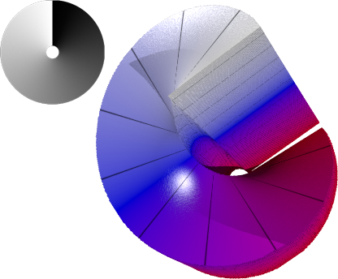
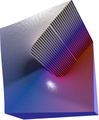
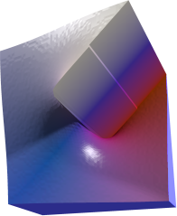
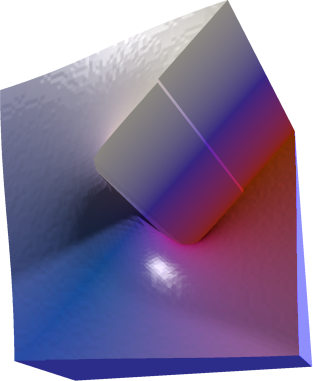
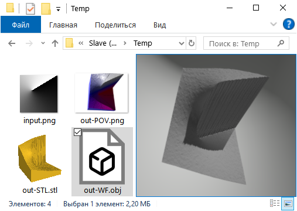
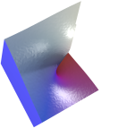
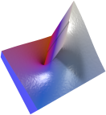
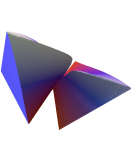
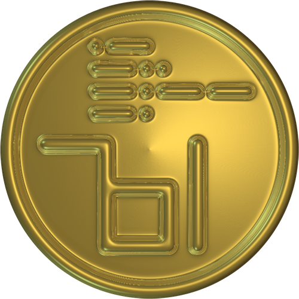
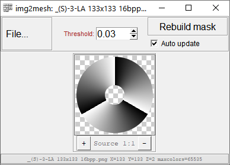

POV‑Ray img2mesh
Converting greyscale PNG and PNM into POV, OBJ, DXF and STL 3D mesh
Old yet still sentient beings may potentially remember Cybermesh Photoshop export plugin by John Knoll, allowing one to sort of extrude greyscale 2D images and save the result as DXF 3D mesh file. Unfortunately, it was Mac only, and gone together with MacOS Classic.
But since progress is always in progress, now you may have some other software for extruding logos, drawings and height fields as 3D meshes, completely free and rather cross-platform. Yes, I'm talking of this very Python program, called img2mesh.
Img2mesh is a pretty simple (well, it was initially) program that reads regular bitmap image, and writes 3D triangle mesh, using pixel X and Y coordinates for «east» and «south» position of 3D triangle mesh nodes, and, most important, pixel brightness as Z, that is, height of the node, thus converting image into sort of 3D landscape.
Img2mesh is available at GitHub for download. All non-standard modules included into distribution, so program is supposed to work right out of the box with any standard installation of Python 3.11 and above.
Update: in version 4.28.1.8 Geometry №4 introduced. While visually it often looks like Geometry №3+, it involves mesh structure change eliminating glitches with sharp maps or non-manifold sides.
Previously on img2mesh: in version 3.21.21.21 mesh geometry upgraded from ver. 3 to 3+. While Geometry №3 was better in general case as compared to older №1 and №2, new "plus" upgrade adds improved support for a specific cases like sharp diagonal transitions (sharp vertical and horizontal transitions were fine from the very beginning). Later on, in version 3.22.3.7 output for new Geometry №3+ was accelerated ca. 20% due to more reasonable buffering control.
Source |
Geometry №3 |
Geometry №4 |
|---|---|---|
|
 |
 |
 |
Geometry type is chosen based on local contrast in source map, corresponding threshold control added to img2mesh GUI.
Default threshold setting is based on both common sense and experimental results and therefore is subject to change.
Overview
Img2mesh treat source flat bitmap as an elevation map for 3D object.

Source image (actual size) and resulting 3D object rendering (default texture). Due to unusual mesh building algorithm img2mesh provides smooth fine surface from just 64x64 px image.
Currently img2mesh support a variety of common input and output formats, briefly summarized below:
Input format | Output format |
|---|---|
8 bpc and 16 bpc PNG, binary PGM, ASCII PGM, binary PPM, ASCII PPM |
POV‑Ray, Wavefront OBJ, stereolithography ASCII STL, ASCII Autodesk DXF |
There is a substantial difference between POV, OBJ, DXF and STL output:
- POV‑Ray file is a scene file, containing triangle mesh, CSG difference of it with box (yes, mesh generated with img2mesh doesn't have gaps and is tight enough to correctly produce CSG), example textures (currently two overlaid textures with color gradient and equal height contour lines to simplify visual perception), light and camera;
- STL contains a single object, consisting of height field triangle mesh plus sides and bottom meshes to close the object as required by 3D printer;
- OBJ and DXF files contain just an object of height field triangle mesh with no extras, since these formats are intended to be imported into other software where all the bells and whistles are supposed to be added.

Screenshot of Windows Explorer window with test source PNG map and resulting output files preview side by side.
POV‑Ray export provides most flexibility. One of the features of POV export is mapping. Maps are transfer functions Z value is passed through (for example, if map is "Z = Z/2", then Z value for all mesh nodes will be halved). Result is similar to Photoshop or GIMP "Curves" applied to source heightfield image, except for that with img2mesh map is nondestructively applied to mesh within POV‑Ray, so you can change map and affect mesh rendering without changing the mesh itself.
Currently maps are represented by generalized linear spline curve. Descriptive part in the beginning of POV file generated look like this:
#declare Curve = function {
spline { linear_spline
0.0, <0.0, 0>,
0.25, <0.25, 0>,
0.5, <0.5, 0>,
0.75, <0.75, 0>,
1.0, <1.0, 0>}
}
#declare map = function(c) {Curve(c).u}
First column contain input values, and second column contain corresponding output values (third column currently is not used for anything good, yet required to fit POV‑Ray vector specs, so just leave it alone). By default, input=output, that is, map does not change anything. However, you can edit it.
Table below illustrates map influence on object shape. Source image is the same 64x64 px conic gradient image, as above. This image is a good test sample for several reasons:
- It covers full input range from 0 to 65535.
- It contains both smooth and sharp transitions.
- It's chiral. When converted to a height field, it produces some sort of spiral 3D object. "Chirality" means the object may exist in two forms, "right" and "left", and surely you know that screws and other spirals comply this definition. This is a good property for a test object because when the developer screws coordinates up, it immediately becomes obvious (for example, one well known 3D print application for a long time was flipping imported images because nobody came up with idea to test it on chiral objects. Now they are trying to be on the right track, so I will not call their names. Let us consider stupid puns about "leaving left track" a sufficient punishment for their unwarranted arrogance).
Default curve |
Inverse curve |
Sawtooth curve |
|---|---|---|
|
 |
 |
 |
Left image is rendered with default map, [0.0→0.0, 1.0→1.0]. We see a left-handed screw-like spiral, which perfectly correspond to our test sample.
Middle image is rendered with inverse map, [0.0→1.0, 1.0→0.0], that is, sort of "Colors→Negative" in Photoshop. Interestingly enough, with our chiral test sample applying height inversion visually looks like horizontal mirroring: our left screw become right. Note, that mesh itself actually have not changed: map transfer function is added on top of it, and applied by POV‑Ray when rendering, so to mirror a spiral, I din't have to draw another one and reexport it with img2mesh.
Right image illustrates rather wild sawtooth map, [0.0→-0.25, 0.25→0.75, 0.5→-0.25, 0.75→1.0, 1.0→-0.25]. As you can see, negative areas get clipped off by bounding box (you can change or remove clipping if you want), but what's really important - despite of such a wild range extension with local inversion, resulting object still looks smooth and solid, which means that mesh does not contain holes or triangle edge mismatch.
Note that POV‑Ray does not pay attention to the order of map control points appearance, so you can add midpoints after endpoints in no particular order. Just remember to have endpoints 0 and 1 defined, since POV‑Ray cannot use undefined functions; everything between 0 and 1 is up to you to edit. Beside that, you can change linear spline to other splines supported by POV‑Ray. Finally, nothing can stop you from writing your own non-spline maps. For example, #declare map = function(c) {int(4*c)/4} will give you function similar to Photoshop "Posterize" with 4 colors, while #declare map = function(c) {4*c-int(4*c)} is 4-teeth saw function.
Img2mesh may be used both for visualizing some actual elevation map and for rendering 3D appearance variant of a logo or other drawing.
Example image below was started as simple black and white drawing, converted to PNG, then some Gaussian Blur was applied in GIMP, resulting PNG fed to img2mesh, then exported POV file edited to set new textures, and rendered with POV‑Ray.

Surely POV‑Ray can import PNG and use them as «heightfields» directly, but img2mesh uses rather unusual «pyramid» conversion algorithm, providing extra quality for small elevation maps (you can see it by smooth shiny surface without defect reflections in example above).
Default export to POV file suggests camera autofocus on object, object scaling to fit 1, 1, 1 cube, and suitable scene structuring for easy editing later.
Exported .POV file may be included intact as .INC into another scene, by setting a flag in the main scene file:
#declare Main = 1;
#include "generated.pov"
object {thething}
«Main» variable in master file turns off camera, light and texture in "generated.pov" file, allowing master file to take over.
For Windows users, compiled Windows 64‑bit img2mesh.exe file is available for download in Release section of GitHub.

For other platforms, Use the Source™ - program is rather self-contained, all non-standard modules like PyPNM and PyPNG are omnicompatible pure Python ones and enclosed to download.
In case downloaded program does not work right out of the box, you will be provided with replacement copy at no extra charge.
For developers: img2mesh currently restructured as image import modules and 3D export module; the latter may be freely used by other software developers.
History (in compacted form)
img2mesh history (click to expand)
Version |
Reason for release |
|---|---|
4.28.1.8 |
Geometry №4 introduced in main version, eliminating glitches with sharp maps or non-manifold sides. For archeologists, Geometry №1 mothballed and encased in carbonite as a separate branch. |
3.27.19.7 |
Update includes some internal math optimization and accumulates a couple of bugfixes for .obj and .stl output. Supposedly supposed to be the last update of Geometry №3+ before improving mesh geometry to new version and thus introducing new bugs. |
3.27.10.10 |
Output changed to "per row" mode, increasing buffer size and therefore writing speed. |
3.21.21.21 |
New mesh Geometry №3+ introduced, combining smooth areas from № 3 with sharp transitions for contrast peaks. |
3.14.15.1 |
Mesh geometry completely changed to № 3, providing significant rendering quality improvement. |
2.14.14.2 |
Last release of Geometry №2. Rewritten from standalone converters to module. |
2.9.1.0 |
STL and OBJ support added 14 Apr 2024, DXF support added 23 Aug 2024, everything harmonized in this 1 Sep 2024 release. Total rewrite to remove all general transforms from POV-Ray made rendering speed to increase more than expected. Internal brightness map transfer function added. |
0.0.2.0 |
Switched to x4 pyramid mesh (Geometry №2), Jan 2024. |
0.0.1.0 |
Initial standalone img2mesh version with 2x2 folding mesh, Dec 2023. |
Now it's time to step forward to img2mesh repository at GitHub for downloads...
...or Move back to Dnyarri`s Python freeware main page.